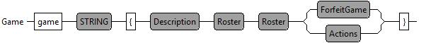
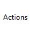
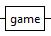
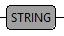
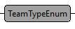
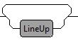

Les éditeurs
L’outil comporte deux éditeurs,
Le premier permet de décrire un club engagé dans une saison. Il permet de définir la liste des membres d’un club, d’indiquer à quelle catégorie ils vont jouer, et pour finir quel sont les officiels et leur rôles dans les match s .
Le second permet de décrire un match. Le fichier qui est édit é contient toutes les informations nécessaires pour remplir une feuille de scorage officiel.
Les deux éditeurs sont des éditeurs de texte qui doivent respecter une grammaire et un vocabulaire. Ce s vocabulaire s et ce s grammaire s vont être décrits dans les chapitres suivant. Un diagramme de syntaxe permet de décrire graphique la syntaxe du langage et sera utilisé pour décrire le langage. Ces diagrammes de syntaxe ressemblent à ceci :

L’élément Game doit être lu de la manière suivante :
Il commence par le mot clef ‘ game ’
Il est suivi par une valeur de type String
Puis d’une accolade ‘{‘
Puis d’un élément ‘Description’
Puis d’un élément ‘ Roster ’
Puis d’un élément ‘ Roster ’
Puis, au choix, d’un élément ‘ ForfaitGame ’ ou d’un élément ‘Actions’
Et doit finir par une accolade ‘}‘
Le tableau suivant décrit les symboles utilisés par ces diagrammes
| Le symbole |
Description |
|  |
C’est le nom de l’élément qui est décrit par le diagramme |
|  |
Un mot clef du langage |
|   |
C’est une référence à un sous élément du langage Il existe deux sous types prédéfinies de valeurs.
|
|
 |
C’est un choix entre rien et un sous élément de type LineUp |
L’exemple suivant décrit donne un aperçu du texte correspondant au diagramme présenté plus haut dans ce document
Les chapitres suivant vont décrire plus précisément les différents éléments du langage utilisé pour décrire les clubs et les matchs.
Dans l’exemple ci-dessus, on remarque la coloration syntaxique des différents éléments du langage. En bleu, on retrouve les éléments de type STRING, en violet les mot clef du langage.
IL est aussi possible d’ajouter des commentaires n’ importe où dans le texte. Ces commentaires ne sont pas exploité par l’outil, par contre ils permettent à l’utilisateur d’ajouter des informations qui pourront être utile pour la lecture de match. Il existe deux types de commentaires :
Le commentaire sur une seule ligne : Il commence toujours par // et finie à la fin de ligne.
Le commentaire multi ligne : il commence par un /* et finit par */
Dans ces deux exemples, les commentaires sont reconnaissables par leur couleur verte.
Pour finir, les espaces et tabulations sont ignorées par l’outil. Par contre, ces espaces ou tabulation sont très utiles pour la lecture du texte car ils permettent d’architecturer le texte en bloc facilement identifiable.